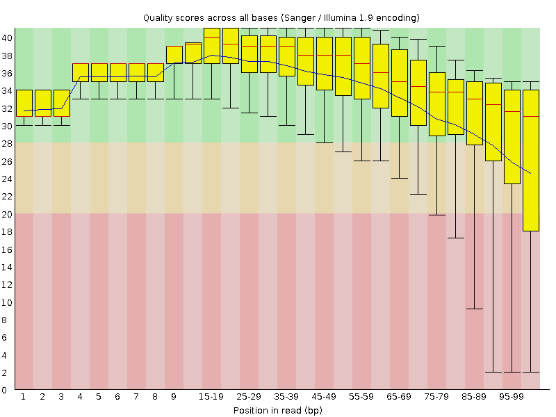
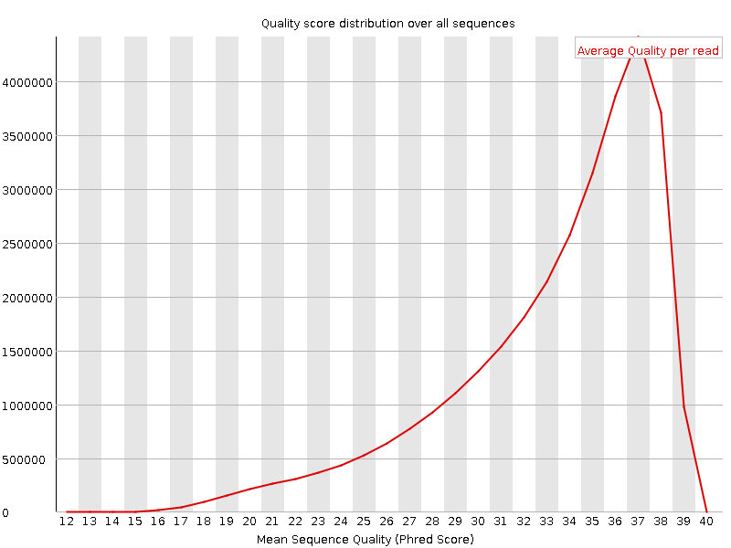
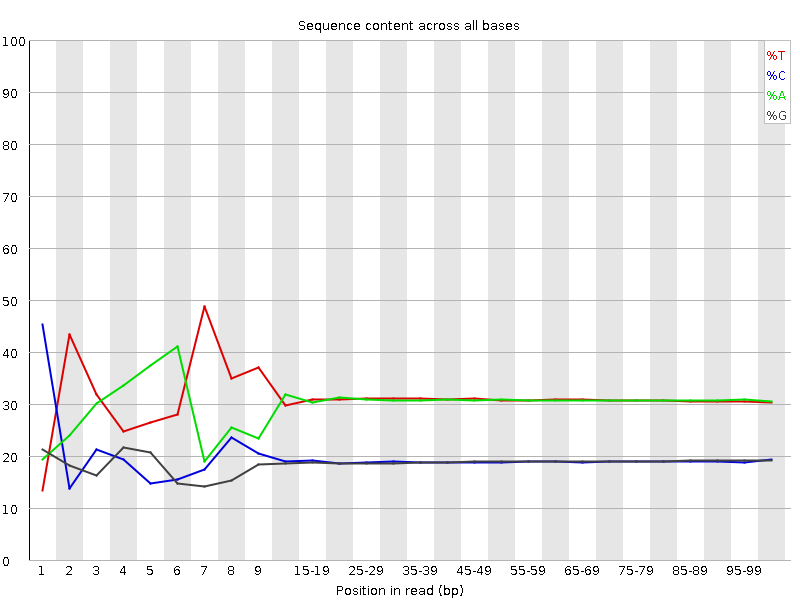
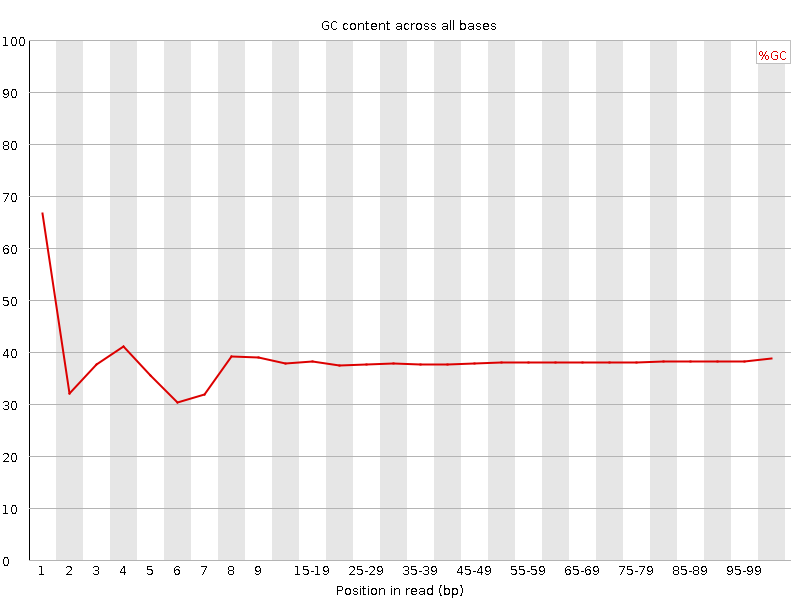
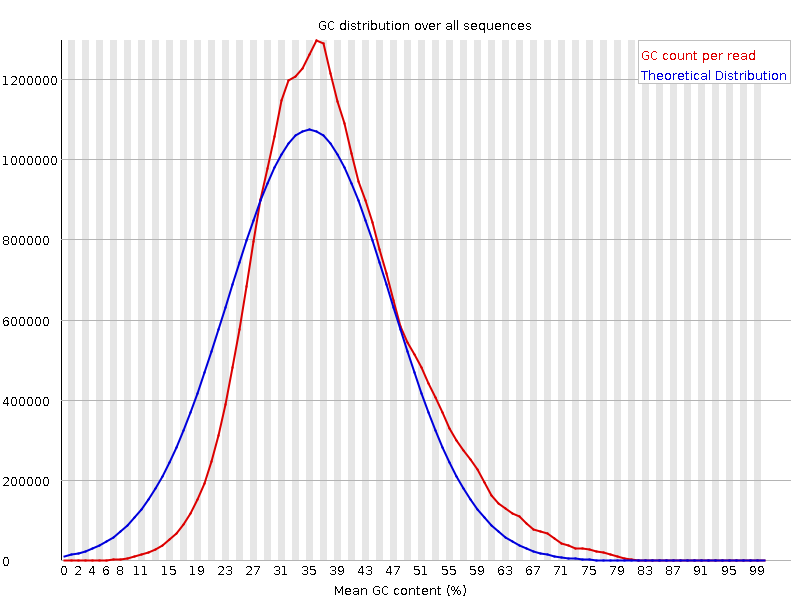
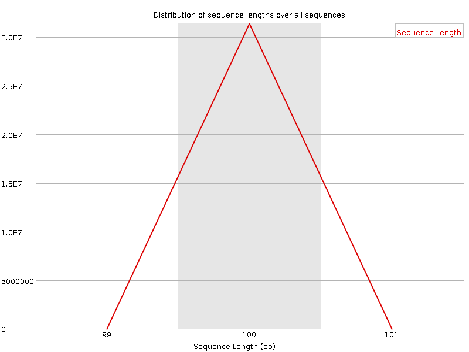
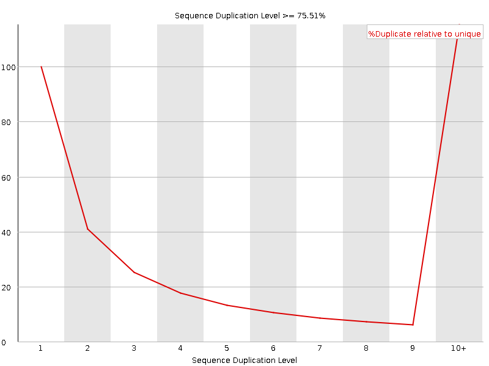
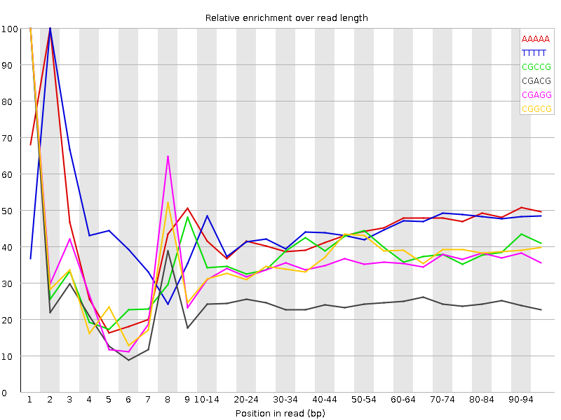

![[OK]](Icons/tick.png) Basic Statistics
Basic Statistics
| Measure | Value |
|---|---|
| Filename | c4.1.fq |
| File type | Conventional base calls |
| Encoding | Sanger / Illumina 1.9 |
| Total Sequences | 31372368 |
| Filtered Sequences | 0 |
| Sequence length | 100 |
| %GC | 38 |
Per base sequence quality

Per sequence quality scores

![[FAIL]](Icons/error.png) Per base sequence content
Per base sequence content

Per base GC content

![[WARN]](Icons/warning.png) Per sequence GC content
Per sequence GC content

Per base N content

Sequence Length Distribution

Sequence Duplication Levels

Overrepresented sequences
No overrepresented sequences
Kmer Content

| Sequence | Count | Obs/Exp Overall | Obs/Exp Max | Max Obs/Exp Position |
|---|---|---|---|---|
| AAAAA | 20687785 | 2.5065563 | 5.663373 | 2 |
| TTTTT | 21595625 | 2.494555 | 5.516763 | 2 |
| CGCCG | 1620355 | 2.0889237 | 5.4949408 | 1 |
| CGACG | 2429900 | 1.9637467 | 7.928912 | 1 |
| CGAGG | 2374350 | 1.9475013 | 5.489311 | 1 |
| CGGCG | 1471045 | 1.9247503 | 5.2264156 | 1 |
| CGCGG | 1401200 | 1.8333633 | 6.069527 | 1 |
| CTTCT | 5937660 | 1.7789673 | 5.3417716 | 1 |
| CGCGA | 2117875 | 1.7115805 | 6.279722 | 1 |
| TCGAG | 3351145 | 1.6816189 | 5.1732635 | 7 |
| CTCGA | 3358535 | 1.660536 | 9.098873 | 1 |
| CGAGA | 3200375 | 1.6213715 | 5.7929316 | 1 |
| CTTCC | 3341075 | 1.6121354 | 5.1779485 | 1 |
| CTGGA | 3152725 | 1.5820509 | 7.230532 | 1 |
| CTTTT | 8458300 | 1.5735228 | 7.119492 | 1 |
| CGCCA | 1968245 | 1.567257 | 5.2429767 | 1 |
| ATCGA | 4958275 | 1.5367868 | 5.477316 | 6 |
| CGATC | 3098445 | 1.5319418 | 5.332303 | 4 |
| CAAAA | 7886370 | 1.5242494 | 5.0002403 | 1 |
| CTCCA | 3104135 | 1.5121784 | 6.363259 | 1 |
| CCGGC | 1157055 | 1.4916482 | 5.2405286 | 1 |
| CTTCG | 3039965 | 1.4887432 | 6.6459007 | 1 |
| CGAAG | 2927790 | 1.4832747 | 5.6703296 | 1 |
| CTTTC | 4884230 | 1.4633517 | 5.0772147 | 1 |
| CTCGG | 1789205 | 1.4322206 | 8.420097 | 1 |
| CTCGC | 1815805 | 1.4321319 | 7.0457606 | 1 |
| CTCGT | 2918735 | 1.4293739 | 7.909098 | 1 |
| CTGGC | 1749055 | 1.4000813 | 5.311806 | 1 |
| CGAAA | 4236800 | 1.32577 | 5.847882 | 1 |
| CTTCA | 4377510 | 1.324119 | 5.4901924 | 1 |
| GAATC | 4103085 | 1.2717259 | 5.333585 | 4 |
| CTTGG | 2488620 | 1.2369319 | 6.251582 | 1 |
| CTTGA | 4027655 | 1.2364827 | 6.1834583 | 1 |
| CTTTG | 3980245 | 1.2103149 | 5.5192013 | 1 |